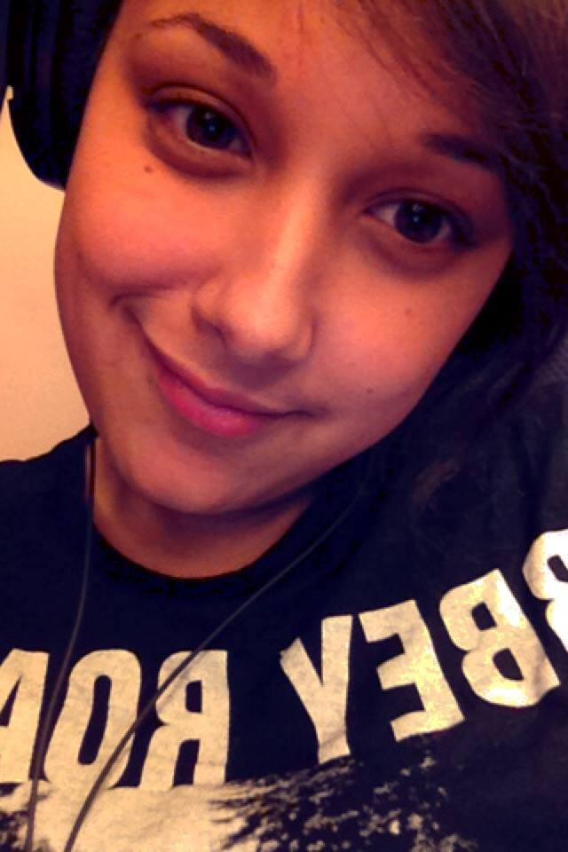

Mijn naam is Sarah Thieleman, geboren op 8 september 1991 in het ziekenhuis te Vlissingen. Ik woon al 4 jaar op mezelf in het centrum van Middelburg. Ik heb vroeger zes jaar gevoetbald, en ondanks dat ik dat niet vaak meer doe, blijft het nog steeds mijn favoriete sport.